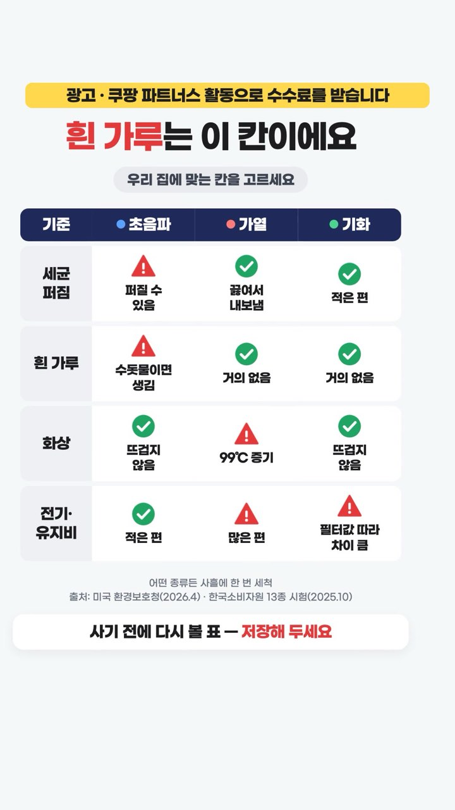

7번 영상
가습기 3종 중 흰 가루는 어느 쪽?
광고 이 게시물은 쿠팡 파트너스 활동의 일환으로, 이에 따른 일정액의 수수료를 제공받습니다.
영상에서 비교한 3가지예요. 누르면 쿠팡 검색 결과로 가요.
영상 속 비교표 바로 보기 ↓가습기 3종, 약점이 다 달라요
초음파 · 가열 · 기화 장단점만
위생 · 화상 · 전기, 셋 다 좋은 종류는 없어요
- 초음파 (찬 김)
- ✔ 전기 적게
- ⚠ 물속 세균 퍼질 수 있음
- 매일 씻어 말릴 수 있으면
- 가열 (끓인 김)
- ✔ 흰 가루 거의 없음
- ⚠ 99℃ 증기 화상 주의
- 아이 손이 안 닿는 곳에
- 기화 (자연 증발)
- ✔ 덜 퍼지는 편
- ⚠ 필터값 따라 유지비 차이
- 필터 교체 주기 먼저 확인
흰 가루는 이 칸이에요
우리 집에 맞는 칸을 고르세요
| 초음파 | 가열 | 기화 | |
|---|---|---|---|
| 세균 퍼짐 | ⚠ 퍼질 수 있음 | ✔ 끓여서 내보냄 | ✔ 적은 편 |
| 흰 가루 | ⚠ 수돗물이면 생김 | ✔ 거의 없음 | ✔ 거의 없음 |
| 화상 | ✔ 뜨겁지 않음 | ⚠ 99℃ 증기 | ✔ 뜨겁지 않음 |
| 전기· 유지비 | ✔ 적은 편 | ⚠ 많은 편 | ⚠ 필터값 따라 차이 큼 |
어떤 종류든 사흘에 한 번 세척 출처: 미국 환경보호청(2026.4) · 한국소비자원 13종 시험(2025.10)
